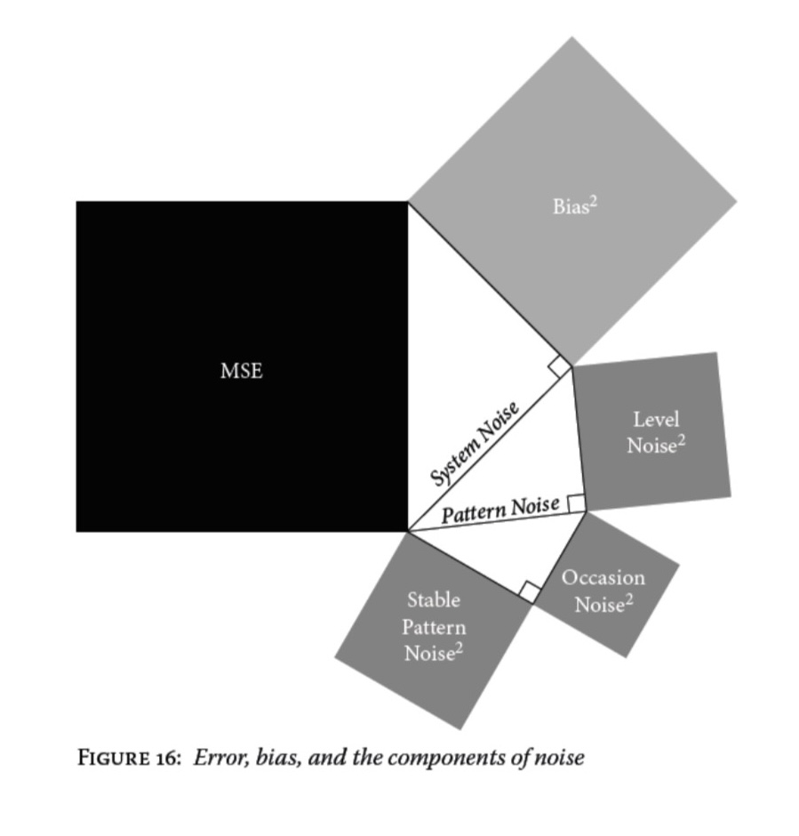
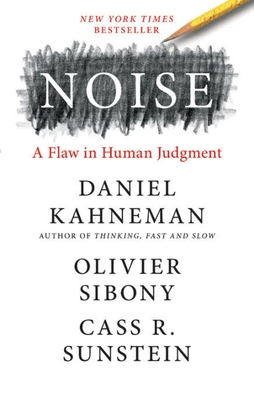

Noise, by Kahneman, Sibony, and Sunstein
Monday December 29, 2025
Thinking, Fast and Slow was about bias, and now Noise is about variance. It even opens with the classic two-by-two accuracy and precision bullseye illustration. But the book is really about how people are systematically different from one another. The book considers federated systems in which work items are assigned to different people, and concludes that most of the "variance" comes from stable differences between those people.

(I am a fan of the variance sum law.)
In the book's phrasing, "system noise" is variance in outcomes, distinct from bias. System noise is the sum of "level noise," which is stable differences in average outcomes per person - "strict judge vs. lenient judge" - and "stable pattern noise," which is stable differences in how individuals are overfit, in the ML sense, - "Bob's generally strict but always lenient with young mothers" - and "occasion noise," which is true repeat-performance noise based on randomness from somewhere (conditions, etc.).
while the existence of occasion noise is surprising and even disturbing, there is no indication that within-person variability is larger than between-person differences. The most important component of system noise is the one we had initially neglected: stable pattern noise, the variability among judges in their judgments of particular cases.
(Note also that "level noise" can be properly thought of as just an average over "pattern noise" - I'm not sure it's correct to treat it separately.)
The challenge, not sufficiently addressed, in my opinion, is that removing this "noise" requires not just choosing one answer to be the right one, but convincing the people involved. This is a societal challenge. Whatever level of strictness or leniency you choose, for the judges, some judges will disagree.
I think Kahneman neglects the extent to which systems exist through false consensus: It isn't possible to get everyone to agree on the details, so the system has to be made vague enough that everyone can think it says what they want. Then they can go on having differences of opinion.
Not that this is good, exactly. It's politics.
And Kahneman does talk about naïve realism and the illusion of agreement, so this idea isn't totally absent from the book. But just like hand-washing took (and takes) surprisingly much effort, there's a big gap between having a Gawande-style checklist and getting it accepted and followed, for example.
There were interesting bits about how groups can have opposite effects: Averaging independent outcomes can decrease noise, but discussion can actually amplify noise. They recommend techniques like "estimate-talk-estimate" to try to get positive effects.
Kahneman also emphasizes "percent concordant" and always includes it with correlation coefficients. This is exactly the Common Language Effect Size which goes by many names. I'm a fan! Glad to have Kahneman supporting this here. It sure would be nice if it went from zero to one though.
Another interesting topic is what Kahneman calls “objective ignorance” and is very tightly related to the Bayes error rate or "irreducible error." It made me wonder, when we're talking about variance explained, if 60% is "irreducible," then maybe explaining 20% is quite a strong result, actually. Unclear how to be quite confident about this kind of thing though. Bad news for psychohistory too. (How much is chaos?)
Kahneman chastises people for feeling they're 80% confident about a given decision if they'll only be right 60% of the time. But there's a difference he ignores, I think: You could be 80% confident that you made the best possible decision given your information at the time, and still be right just 60% of the time. Those can be consistent.
The Robust Beauty of Improper Linear Models in Decision Making (just give everything equal weight) is interesting. I wonder whether some big chunk of AI "success" will essentially come from this kind of effect, just the benefit of statistical instead of clinical judgement, but the fanciness of AI will make it more palatable.
There's bits on incorporating the base rate, which feels like being Bayesian. Don't overfit, etc. And be actively open-minded.
What is the right way to average predictions of superforecasters? Is it just simple arithmetic mean? Or is it some other mean that works best?
Long ago I was in a start-up that didn't do annual performance reviews. I thought it was radical and great. So it was interesting to hear that apparently more companies are moving away from annual performance reviews.
And if your goal is to bring out the best in people, you can reasonably ask whether measuring individual performance and using that measurement to motivate people through fear and greed is the best approach (or even an effective one).
The book finishes out with some discussion of rules vs. standards, where rules are more mechanical and standards still allow some discussion while being more prescriptive than just principles.

Six principles of decision hygiene
- The goal of judgment is accuracy, not individual expression.
- Think statistically, and take the outside view of the case.
- Structure judgments into several independent tasks.
- Resist premature intuitions.
- Obtain independent judgments from multiple judges, then consider aggregating those judgments.
- Favor relative judgments and relative scales.